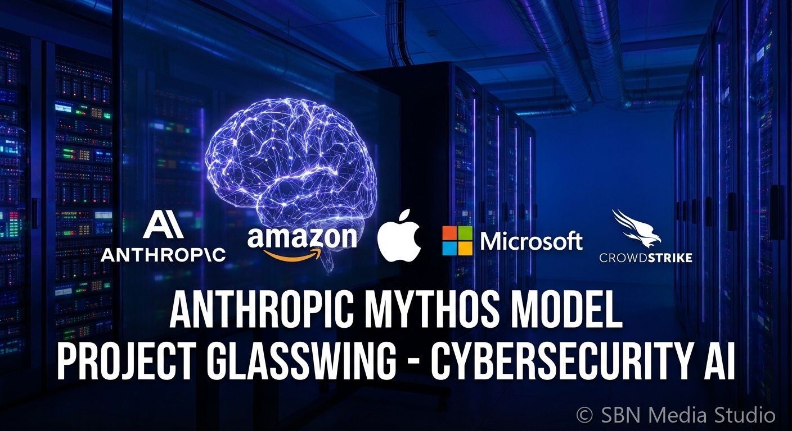

Anthropic Hits $965B, Greenlights Mythos Wide Release

SAN FRANCISCO, JUNE 1, 2026. Anthropic closed a $65 billion primary round on May 29, 2026 at a post-money valuation of roughly $965 billion, eclipsing OpenAI's last published $852 billion mark and making it the most valuable private AI company in the world.
The round, reported by Fortune with details cross-confirmed by Bloomberg and Axios, was led by existing growth investors and includes new commitments from sovereign and Big Tech balance sheets. In the same announcement, Anthropic said its Mythos-class frontier models — previously gated behind Project Glasswing safeguards because of cyber and biosecurity uplift risk — will go to wide release 'in coming weeks' as the next set of containment and monitoring controls finishes hardening. The two announcements are deliberately paired: the capital underwrites the compute build needed to serve Mythos at scale, and the Mythos timeline is what justifies the valuation step-up.
The mechanism behind the leap is largely revenue mix and run-rate. Anthropic told investors Q1 2026 revenue and usage grew roughly 80x year-over-year on an annualized basis, an outlier even in a category where 10x growth has become normal. The enterprise book — KPMG (276,000 employees), PwC, the Gates Foundation ($200M), plus an expanding Claude Code footprint inside Fortune 500 engineering orgs — gives Anthropic something OpenAI's consumer-heavy mix does not: a high gross-margin annuity attached to mission-critical workflows. The Mythos timing then matters because it converts capability headroom into a defensible pricing tier, with Project Glasswing reframed as a moat rather than a constraint.
The consequences are immediate. First, the AI funding cycle has clearly entered a phase where lead labs trade the public-markets path for ever-larger private rounds, with secondaries handling early-investor liquidity — a pattern Axios has been mapping for months as Google, Microsoft, and the megacap balance sheets compete over which lab they back hardest. Second, the OpenAI-Anthropic gap on valuation is now visible enough to influence enterprise procurement, where CIOs increasingly cite vendor solvency and roadmap credibility as primary criteria. Third, the Mythos wide release places real pressure on the export-control regime: the U.S. government will have to decide quickly whether to treat a Mythos-class model as a controlled item, and Anthropic has been explicit that it prefers a structured policy answer to ad-hoc restrictions.
The takeaway is that the AI economy is consolidating around two centers of gravity — Anthropic at $965B and OpenAI at $852B — with Google, Meta, and Amazon investing through them as much as around them. The Mythos rollout is the test event of the next quarter: if Project Glasswing holds in the wild, Anthropic's valuation premium becomes defensible. If it does not, the cyber and biosecurity narrative that has shadowed the frontier all year reasserts itself fast.
Sources
Fortune, Bloomberg, Axios